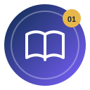
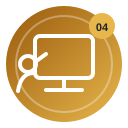
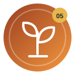
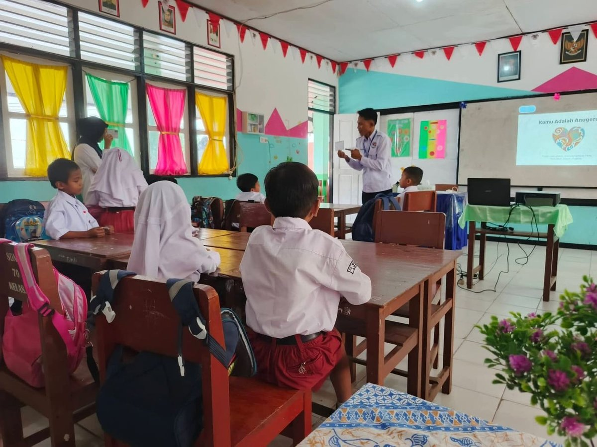
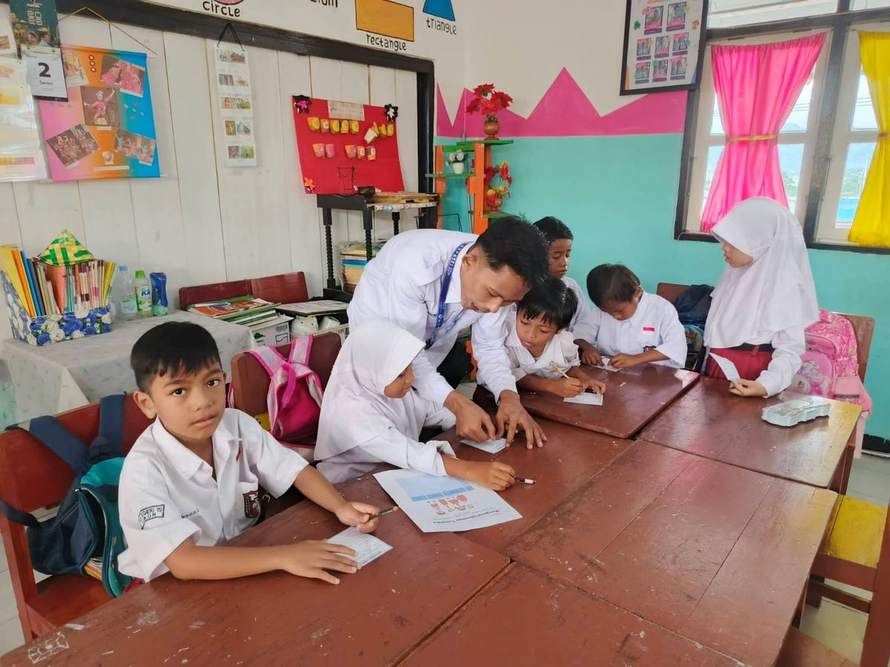
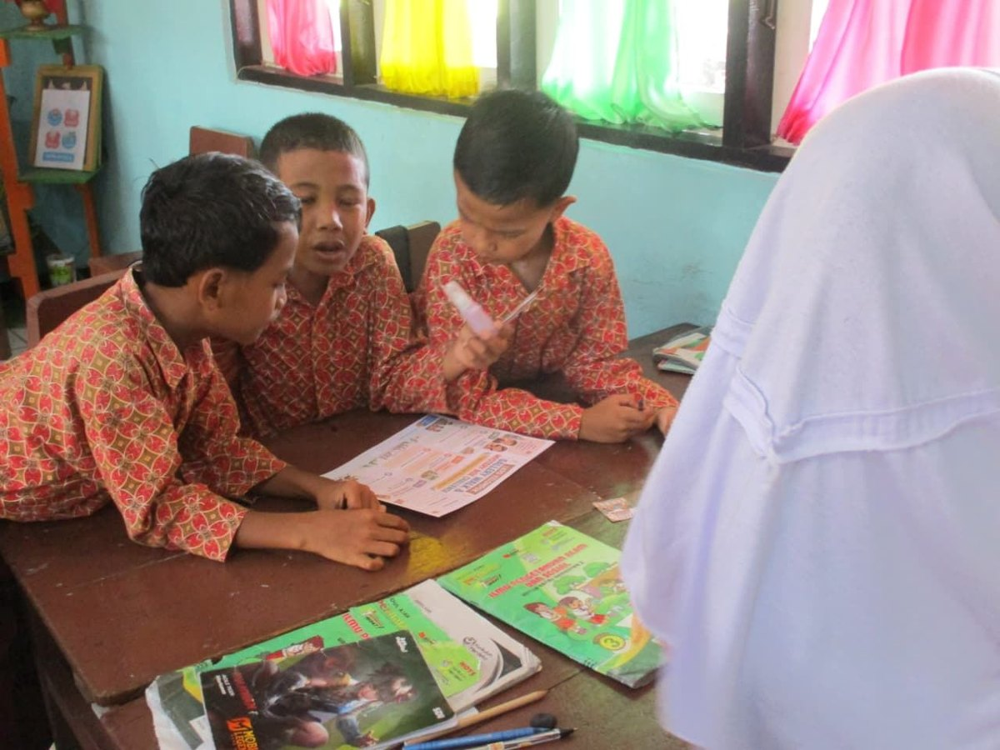
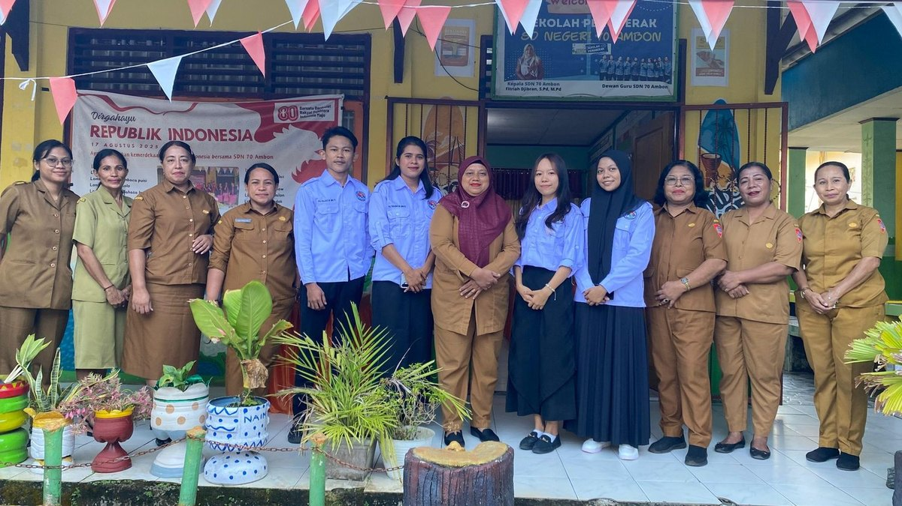
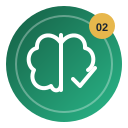
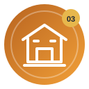
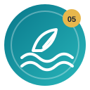

SEMESTER I6mata kuliah
Fondasi Menjadi Guru Profesional
Memaknai pendidikan, memahami murid, merancang pembelajaran, dan menguji teori melalui praktik.
Buka Halaman Semester I →
Website ini mendokumentasikan sebelas pengalaman belajar dari dua semester, perubahan cara pandang, serta artefak nyata yang menunjukkan proses saya bertumbuh sebagai calon guru profesional.
📘 Semester I 📗 Semester IIMemaknai pendidikan, memahami murid, merancang pembelajaran, dan menguji teori melalui praktik.
Buka Halaman Semester I →Mengembangkan kompetensi sosial emosional, asesmen, PPL mandiri, kepemimpinan, dan pendidikan kepulauan.
Buka Halaman Semester II →Refleksi menyeluruh tentang arah pendidikan Indonesia, langkah menjadi guru profesional, dan tiga rencana tindak lanjut setelah PPG.
Pendidikan bukan hanya tentang apa yang diajarkan, tetapi tentang siapa yang dibentuk.

PPG Prajabatan · Pendidikan Guru Sekolah Dasar · Universitas Pattimura
Semester I membangun fondasi cara saya memahami pendidikan, murid, perencanaan, dan praktik mengajar. Semester II memperdalam fondasi tersebut melalui pembelajaran sosial emosional, asesmen berbasis kebutuhan, PPL mandiri, projek kepemimpinan, serta pembelajaran yang peka terhadap konteks kepulauan.
“Saya tidak lagi melihat pembelajaran hanya dari apa yang perlu saya ajarkan, tetapi juga dari siapa yang belajar, bukti pemahaman yang muncul, dan perubahan apa yang perlu saya lakukan setelah mengajar.”
Setiap mata kuliah memberikan lensa yang berbeda, tetapi semuanya bertemu pada satu tujuan: pembelajaran yang lebih berpihak pada murid, terencana, reflektif, dan dapat terus diperbaiki.

01Memahami pendidikan sebagai proses menuntun serta menempatkan nilai dan etika dalam keputusan guru.
Memaknai pendidikan → 02
02Belajar melihat murid secara holistik melalui asesmen awal, profiling, dan pembelajaran berpusat pada murid.
Memahami siapa yang belajar → 03
03Membedakan aktivitas yang sekadar aktif dengan pengalaman belajar yang menghasilkan pemahaman mendalam.
Merancang pengalaman bermakna →
04Menghubungkan perencanaan dengan dinamika nyata kelas melalui praktik, umpan balik, dan refleksi.
Menguji teori dalam praktik →
05Mengubah cara memandang kemampuan, kesalahan, tantangan, dan bahasa yang digunakan saat mendampingi murid.
Belajar dari tantangan → 06
06Menggunakan backward design untuk menyelaraskan tujuan, asesmen, dan pengalaman belajar.
Merancang lebih terarah →Pilih mata kuliah untuk membaca Connection, Challenge, Concept, Change, analisis artefak, dan perubahan praktis yang ingin saya lakukan.
Memaknai kembali peran guru sebagai pendidik yang menuntun, memberi teladan, dan mengambil keputusan dengan kesadaran nilai serta etika.
Materi perkuliahan ini menguatkan pemahaman saya bahwa menjadi guru bukan sekadar menyampaikan pengetahuan, tetapi menuntun murid agar berkembang sesuai kodrat alam dan kodrat zamannya. Pemikiran Ki Hadjar Dewantara, pendidikan kontekstual, pendidikan nilai, dan kode etik membuat saya semakin memahami bahwa keputusan guru perlu mempertimbangkan potensi, kebutuhan, lingkungan sosial budaya, serta martabat setiap murid.
Hal yang paling menantang adalah pergeseran dari kebiasaan melihat keberhasilan terutama dari tersampaikannya materi menuju pertanyaan yang lebih mendasar: apakah pembelajaran benar-benar berpihak pada murid dan relevan dengan kehidupannya. Studi kasus Ali yang mogok sekolah menunjukkan bahwa masalah belajar tidak selalu berasal dari kemampuan akademik, sehingga guru perlu mendengar dan memahami akar masalah sebelum memberi tuntutan.
Konsep utama yang saya pelajari ialah pendidikan sebagai proses menuntun; kodrat alam dan kodrat zaman; pembelajaran kontekstual; Pancasila sebagai landasan nilai; peran guru dalam menanamkan nilai; dan kode etik sebagai pedoman tindakan profesional. Nilai harus hadir dalam keteladanan, komunikasi, keputusan, perlakuan terhadap perbedaan, dan budaya kelas.
Saya ingin lebih konsisten memulai pembelajaran dari kondisi nyata murid, memberi ruang untuk mendengar kebutuhan mereka, menggunakan contoh yang dekat dengan lingkungan, serta menghindari satu standar untuk semua. Dalam mengambil keputusan, saya juga ingin lebih sadar pada nilai, etika, dan dampaknya bagi murid, lalu menjadikan refleksi sebagai kebiasaan profesional.
Artefak pilihan: Refleksi dan Aksi Nyata serta tugas Kode Etik dalam Kerangka Pendidikan Nilai. Artefak tersebut menunjukkan proses dari memahami filosofi dan nilai hingga merumuskan tindakan sebagai calon guru.
Bagian yang paling mendukung: rancangan tindakan yang berpusat pada diri, murid, dan sekolah serta penegasan bahwa perilaku dan keputusan guru harus berpijak pada nilai dan menjaga kepentingan murid.
Belajar melihat murid secara lebih holistik dan menggunakan data sebagai dasar keputusan pembelajaran.
Pembelajaran yang baik harus dimulai dari pemahaman terhadap siapa yang belajar. Saat melakukan asesmen awal dan profiling kelas III SD Negeri 70 Ambon, saya menemukan variasi kemampuan dan kebutuhan belajar pada 19 murid: 11 kategori mandiri/tinggi, 7 berkembang/sedang, dan 1 membutuhkan bimbingan lebih dekat. Data itu menegaskan bahwa satu kelas tidak pernah benar-benar seragam.
Tantangan paling menonjol adalah mengubah kebiasaan merancang pembelajaran berdasarkan asumsi umum tentang kelas menjadi pembelajaran berbasis data tentang murid. Saya juga belajar untuk tidak terburu-buru memberi label karena murid yang pasif, mudah terdistraksi, atau belum mampu menjawab bisa saja memerlukan dukungan, cara penyajian, waktu, atau rasa aman yang berbeda.
Konsep penting meliputi karakteristik dan perkembangan peserta didik, perbedaan individu, teori belajar, motivasi, pembelajaran berpusat pada murid, asesmen awal, profiling, pengelolaan kelas, pembelajaran inklusif, dan diferensiasi. Asesmen dan observasi saya pahami sebagai sumber informasi untuk menentukan dukungan, strategi, media, pengelompokan, dan tindak lanjut.
Saya ingin membiasakan asesmen awal dan profiling sebelum menyusun keputusan pembelajaran, lalu menggabungkan data tes dengan observasi keterlibatan, kemandirian, keberanian bertanya, interaksi sosial, dan kebutuhan dukungan. Perkembangan murid akan saya catat berkala agar rancangan berikutnya dapat diperbaiki berdasarkan data, bukan dugaan.
Artefak pilihan: Lembar Kerja Aktivitas 4b Rekomendasi Desain Pembelajaran dan Laporan UAS PPDP. Keduanya menunjukkan proses dari pengumpulan data, analisis kebutuhan, hingga perancangan tindak lanjut.
Bagian yang paling mendukung: pemetaan 19 murid serta temuan bahwa kebutuhan belajar tidak hanya terkait hasil tes, tetapi juga fokus, keberanian, kemandirian, kerja sama, dan rasa nyaman.
Belajar merancang pengalaman yang tidak berhenti pada aktivitas, tetapi menghasilkan pemahaman dan bukti belajar.
Mata kuliah ini berkaitan langsung dengan tugas calon guru untuk merancang pembelajaran yang tidak berhenti pada aktivitas yang ramai atau penyelesaian tugas, tetapi menghasilkan pemahaman yang bermakna. Melalui analisis kasus, perencanaan, implementasi, dan refleksi, saya belajar menghubungkan tujuan, pengalaman belajar, asesmen, dan konteks kehidupan murid.
Tantangan terbesar adalah membedakan pembelajaran yang sekadar aktif dengan pembelajaran yang benar-benar mendalam. Diskusi, proyek, atau media belum otomatis menghasilkan pemahaman apabila pertanyaan, tugas, dan asesmennya masih dangkal. Saya juga melihat bahwa murid aktif dapat mendominasi kelompok sementara murid lain tetap pasif.
Konsep utama meliputi pembelajaran mendalam yang berkesadaran, bermakna, dan menggembirakan; keterkaitan pengetahuan dengan situasi nyata; aktivitas berpikir tingkat tinggi; asesmen sebagai bagian dari siklus pembelajaran; keselarasan tujuan, kegiatan, dan bukti belajar; serta refleksi dan perbaikan berkelanjutan.
Saya ingin memulai dari pengalaman nyata murid dan pertanyaan pemantik yang lebih tajam, membagi peran agar partisipasi kelompok lebih merata, menggunakan asesmen formatif selama proses, serta memakai refleksi penutup untuk melihat bukan hanya apa yang murid ketahui, tetapi bagaimana mereka memahami dan menggunakan pengetahuan tersebut.
Artefak pilihan: Praktik Implementasi Pembelajaran Mendalam dan RTL Topik 3. Artefak implementasi menunjukkan penerapan langsung, sedangkan RTL menunjukkan bahwa hasil praktik dibaca kembali untuk menemukan kekurangan dan menentukan perbaikan konkret.
Bagian yang paling mendukung: tujuan yang meminta murid mengidentifikasi, menganalisis, berdiskusi, dan menyajikan solusi, lalu temuan bahwa pertanyaan pemantik masih terlalu umum dan partisipasi belum merata diperbaiki melalui konteks yang lebih dekat, pembagian peran, dan bantuan sesuai kebutuhan.
Ruang paling nyata untuk menghubungkan teori perkuliahan dengan praktik profesional di sekolah.
Di SD Negeri 70 Ambon saya tidak hanya mengamati pembelajaran, tetapi juga melakukan asistensi, menyusun perangkat, menyiapkan media, melaksanakan praktik dalam beberapa siklus, melakukan asesmen, menerima umpan balik, dan merefleksikan pembelajaran. Saya memahami bahwa kompetensi guru terbentuk melalui proses mencoba, mengamati respons murid, menerima masukan, lalu memperbaiki praktik.
Tantangan utama adalah perbedaan antara rencana yang terlihat baik di atas kertas dan dinamika kelas yang sebenarnya. Murid memiliki kemampuan, keberanian, konsentrasi, dan kecepatan belajar berbeda; waktu terbatas; partisipasi kelompok tidak selalu merata; dan media tetap membutuhkan pertanyaan serta cara penggunaan yang tepat.
Konsep penting yang saya peroleh adalah praktik reflektif, pengelolaan kelas, asesmen berkelanjutan, adaptasi pembelajaran, media kontekstual, scaffolding, dan kolaborasi profesional. Perencanaan, pelaksanaan, asesmen, dan refleksi merupakan satu rangkaian yang tidak dapat dipisahkan.
Saya ingin lebih disiplin menyiapkan pembelajaran berdasarkan data awal murid, menyiapkan alternatif ketika strategi pertama tidak berjalan, membuat peran kelompok lebih terstruktur, dan mengumpulkan bukti sederhana selama pembelajaran agar evaluasi setelah mengajar tidak hanya berdasarkan perasaan. Setiap refleksi harus menghasilkan satu atau dua perbaikan yang benar-benar dilaksanakan.
Artefak pilihan: Modul Ajar Siklus II, LK Refleksi Siklus II, dan dokumentasi perjalanan PPL. Kombinasi tersebut memperlihatkan teori yang diterjemahkan menjadi rencana, pelaksanaan nyata, umpan balik, lalu perbaikan dari satu siklus ke siklus berikutnya.
Bagian yang paling mendukung: identifikasi karakteristik murid yang beragam, penggunaan media dan diskusi, catatan hasil praktik, serta perbaikan berdasarkan masukan guru pamong dan pengalaman kelas.
Mengubah bahasa, respons, dan cara memandang kemampuan agar murid melihat tantangan sebagai bagian dari proses belajar.
Cara guru memandang kemampuan murid akan memengaruhi cara memberi tugas, menanggapi kesalahan, dan memberi umpan balik. Kalimat “belum bisa” memiliki makna berbeda dari “tidak bisa”. Ketika guru percaya kemampuan dapat berkembang melalui usaha, strategi, latihan, dan bantuan yang tepat, guru terdorong mencari pendekatan yang membantu murid bertumbuh.
Saya menyadari bahwa fixed mindset dapat muncul secara halus ketika terlalu cepat menilai murid berdasarkan hasil, membandingkan kecepatan belajar, atau menganggap metode yang pernah berhasil akan selalu cocok. Mata kuliah ini menantang saya untuk melihat kesalahan sebagai informasi tentang bagian yang perlu diperbaiki.
Konsep utama meliputi fixed mindset dan growth mindset, kemampuan otak untuk terus berkembang melalui proses belajar, makna kata “belum”, nilai dari tantangan dan kesalahan, serta umpan balik yang berfokus pada proses, usaha, strategi, dan perkembangan. Growth mindset juga berkaitan dengan kreativitas, inovasi, keberanian mencoba, refleksi, dan ketekunan.
Saya ingin mengubah bahasa dan respons di kelas. Ketika murid berkata “saya tidak bisa”, saya akan membantu mengubahnya menjadi “saya belum bisa” dan mencari strategi berikutnya. Saya akan mengurangi pujian yang hanya menekankan label “pintar”, lebih banyak mengapresiasi proses, ketekunan, keberanian bertanya, dan perbaikan, serta menjadikan kesalahan sebagai bahan diskusi yang aman.
Artefak pilihan: LK “Aku Belum Berhasil, Bukan Tidak Berhasil”, “Guru yang Menumbuhkan Growth Mindset”, dan “Mengubah Responmu untuk Kelas Bertumbuh”. Artefak tersebut membentuk alur dari memahami konsep hingga menerapkannya dalam respons guru di kelas.
Bagian yang paling mendukung: perubahan kalimat dari “aku gagal lagi, percuma mencoba” menjadi “aku belum berhasil, jadi harus mencoba lagi”, serta respons guru “kalau murid tidak paham, berarti saya perlu mencoba cara lain”.
Mengubah cara merancang dari “aktivitas apa yang menarik?” menjadi “pemahaman apa yang harus dicapai dan bukti apa yang menunjukkannya?”.
Melalui Understanding by Design (UbD), saya belajar bahwa guru tidak seharusnya memulai perencanaan dari daftar kegiatan, tetapi dari hasil belajar dan pemahaman yang ingin dicapai. Setelah itu guru menentukan bukti asesmen yang menunjukkan tercapainya pemahaman, baru kemudian merancang pengalaman belajar. Cara berpikir ini membuat perencanaan lebih terarah.
Materi paling berbeda dari kebiasaan sebelumnya adalah backward design. Sangat mudah memulai dari metode, media, atau aktivitas yang menarik, lalu menyesuaikan tujuan di belakang. UbD menuntut sebaliknya dan menantang saya memastikan setiap tujuan memiliki bukti asesmen yang tepat serta setiap kegiatan benar-benar mendukung tujuan tersebut.
Konsep utama ialah tiga tahap UbD: menentukan hasil yang diinginkan, menentukan bukti asesmen, dan merancang pengalaman belajar. Saya juga belajar tentang keselarasan tujuan–asesmen–aktivitas, pertanyaan esensial, transfer pemahaman, evaluasi rancangan, dimensi pengetahuan, serta rekomendasi perbaikan berbasis bukti.
Saya ingin membiasakan backward design saat menyusun modul ajar: memperjelas pemahaman dan kemampuan transfer, menentukan bukti yang benar-benar menunjukkan pemahaman, lalu memilih kegiatan, media, dan strategi. Sebelum digunakan, saya akan memeriksa keselarasan ketiga tahap dan memperbaiki bagian yang tidak mendukung tujuan.
Artefak pilihan: UTS Modul Ajar IPAS Kelas V berbasis UbD dan LK Evaluasi UbD. Artefak tersebut menunjukkan kemampuan merancang sekaligus menilai kembali keselarasan desain.
Bagian yang paling mendukung: struktur tiga tahap UbD serta temuan bahwa beberapa tujuan belum sepenuhnya selaras dengan bukti asesmen dan aktivitas, lalu diperbaiki melalui penguatan hasil yang diinginkan, bukti asesmen, dan kegiatan yang lebih terarah.
Artefak dipilih karena mendukung refleksi, bukan sekadar karena merupakan tugas. Gunakan filter untuk melihat bukti dari setiap mata kuliah.

Menerjemahkan pemahaman filosofis menjadi komitmen tindakan.

Menegaskan tanggung jawab moral dan profesional dalam keputusan guru.

Menggunakan data murid untuk menyusun rekomendasi desain pembelajaran.

Menghubungkan konteks, proses berpikir, diskusi, dan bukti pemahaman.

Bukti teori yang diterjemahkan menjadi rencana pembelajaran konkret.
Bukti bahwa praktik dibaca kembali untuk menentukan perbaikan.

Memperlihatkan perubahan bahasa dari fixed mindset ke growth mindset.
Respons guru terhadap kegagalan, ketakutan, dan koreksi di kelas.
Dokumentasi ini memperkuat bahwa refleksi tidak berdiri sendiri; ia lahir dari pengalaman nyata di kelas dan interaksi profesional selama PPL.






Enam pengalaman belajar Semester I mengubah cara saya melihat profesi guru. Filosofi pendidikan mengingatkan saya untuk menuntun; PPDP mengajarkan bahwa keputusan harus berangkat dari pemahaman terhadap murid; PMA menuntut kedalaman, bukan sekadar aktivitas; PPL menguji teori dalam dinamika kelas; growth mindset mengubah bahasa dan respons terhadap kegagalan; sedangkan UbD menata cara saya merancang agar tujuan, asesmen, dan pengalaman belajar benar-benar selaras.
Perubahan yang ingin saya jaga bukan hanya pada perangkat pembelajaran, tetapi pada kebiasaan profesional: mengumpulkan data sebelum mengambil keputusan, mendengar murid, merancang dengan tujuan yang jelas, mencari bukti pemahaman, menerima umpan balik, dan selalu menentukan tindak lanjut setelah refleksi.
Setiap mata kuliah dibaca melalui Connection, Challenge, Concept, Change, dan bukti artefak pembelajaran.
Membangun kelas yang aman, berelasi, dan peka terhadap emosi murid.

Menggunakan asesmen awal dan DUP untuk memperluas akses belajar.

Mengamati bukti belajar, merefleksi praktik, lalu memperbaikinya.
Memimpin inovasi yang berangkat dari kebutuhan sekolah.

Menjadikan budaya dan potensi Maluku sebagai sumber belajar.
Pilih mata kuliah untuk membaca keterhubungan pengalaman, tantangan, konsep utama, perubahan, dan analisis artefaknya.
Memahami bahwa kesiapan belajar tumbuh dari rasa aman, kemampuan mengelola emosi, dan hubungan yang sehat di kelas.
Pengalaman menghadapi murid dengan karakter yang beragam membuat materi Pembelajaran Sosial Emosional terasa dekat dengan peran saya sebagai calon guru. Ada murid yang mudah kehilangan fokus, takut menjawab karena khawatir salah, belum mampu menunggu giliran, atau baru bersedia mengikuti kegiatan setelah didekati secara personal. Dari situ saya melihat bahwa kesiapan belajar tidak hanya ditentukan oleh kemampuan akademik, tetapi juga oleh perasaan, hubungan, dan rasa aman. Ketika menyusun modul ajar Pendidikan Pancasila tentang Lambang Pancasila, lima kompetensi sosial emosional saya hubungkan langsung dengan proses pembelajaran.
Sebelumnya, kelas yang tenang sering saya anggap sebagai tanda pembelajaran berjalan baik. Perkuliahan ini membuat saya menyadari bahwa murid yang diam belum tentu memahami atau merasa nyaman, sementara kelas yang ramai belum tentu memberi kesempatan yang adil. Tantangan lain adalah memahami bahwa guru harus lebih dahulu memberi contoh dalam mengelola emosi. Pilihan kata, nada suara, ekspresi, dan cara menegur dapat membuat murid merasa dibimbing atau justru dipermalukan.
Konsep paling penting bagi saya adalah lima kompetensi CASEL: kesadaran diri, manajemen diri, kesadaran sosial, keterampilan berelasi, dan pengambilan keputusan yang bertanggung jawab. Kelimanya dapat dilatih melalui pemeriksaan emosi, latihan fokus, kesepakatan kelas, komunikasi tenang, kerja kelompok, pemberian kesempatan yang seimbang, serta refleksi. Kelas yang aman bukan kelas tanpa kesalahan, melainkan kelas yang memberi ruang untuk bertanya, mencoba, dan memperbaiki kesalahan tanpa takut ditertawakan.
Saya ingin memulai pembelajaran dengan pemeriksaan emosi sederhana dan menggunakan latihan pernapasan atau teknik STOP saat dibutuhkan. Kesepakatan kelas akan disusun bersama, sedangkan umpan balik dan teguran diberikan dengan bahasa yang tidak mempermalukan. Saya juga akan memperhatikan murid yang belum mendapat kesempatan, membutuhkan dukungan, atau masih ragu terlibat. Catatan penilaian akan memuat perkembangan akademik dan sosial emosional, disertai evaluasi diri guru secara rutin.
Artefak pilihan: UTS PSE berupa modul ajar Pendidikan Pancasila yang mengintegrasikan lima kompetensi CASEL, keteladanan guru, dan evaluasi pelaksanaan pembelajaran. Artefak ini dipilih karena menunjukkan perubahan cara pandang saya dan berangkat dari keadaan murid yang benar-benar saya temui.
Bagian yang paling mendukung: pemetaan kompetensi CASEL, guru sebagai teladan, latihan fokus pada pembuka, kerja kelompok, rubrik pengelolaan kelas dan emosi, serta refleksi guru tentang pemerataan partisipasi dan komunikasi yang santun.
Menggunakan data asesmen awal untuk merancang akses, dukungan, dan tantangan belajar yang lebih tepat.
Keterkaitan mata kuliah ini terasa jelas ketika saya melakukan asesmen awal literasi pada murid kelas III di SD Negeri 70 Ambon. Dari 20 murid yang mengikuti asesmen individual, delapan berada pada level Kata, sembilan pada level Lancar, dan tiga pada level Pemahaman. Data tersebut menunjukkan bahwa kemampuan membaca lancar tidak selalu diikuti kemampuan memahami bacaan. Sebagai calon guru, saya memerlukan bukti yang lebih jelas sebelum menentukan kegiatan, media, bantuan, dan tingkat tantangan.
Pemahaman saya tentang keadilan berubah. Adil tidak berarti semua murid mengerjakan tugas yang sama dengan cara yang sama. Tujuan inti dapat tetap setara, tetapi jalannya tidak harus seragam. Murid pada level Kata membutuhkan gambar, kata kunci, pengulangan, dan bantuan bertahap; murid yang lancar masih perlu dikuatkan pemahamannya; sedangkan murid pada level Pemahaman memerlukan pertanyaan yang menuntut alasan dan kesimpulan. Pengelompokan juga tidak boleh berubah menjadi label yang melekat.
Asesmen awal merupakan dasar pengambilan keputusan pembelajaran, bukan sekadar bahan rekapitulasi. Saya juga mempelajari tiga prinsip Desain Universal untuk Pembelajaran: beragam cara membangun keterlibatan, menyajikan informasi, serta memberi kesempatan kepada murid untuk bertindak dan menunjukkan pemahaman. Prinsip tersebut berjalan bersama pembelajaran mendalam yang berkesadaran, bermakna, dan menggembirakan. Akses belajar perlu dipikirkan sejak perencanaan.
Sebelum menyusun kegiatan dan kelompok, saya akan melakukan asesmen awal yang lebih utuh, mencakup kemampuan membaca, penguasaan konsep, kebutuhan bantuan, dan kondisi nonkognitif. Tujuan utama tetap sama, tetapi teks, media, pertanyaan penuntun, dan bentuk respons dibuat lebih lentur. Pengelompokan akan ditinjau berkala agar murid dapat berpindah sesuai perkembangan, sedangkan beberapa pertanyaan inti yang sama digunakan untuk memperoleh gambaran pemahaman yang lebih adil.
Artefak pilihan: Laporan Asesmen Awal dan Rancangan Pembelajaran Mendalam Berbasis Desain Universal untuk Pembelajaran. Artefak dipilih karena bertolak dari asesmen individual dan memperlihatkan hubungan antara data, pemetaan kebutuhan, rancangan, serta refleksi profesional.
Bagian yang paling mendukung: rekapitulasi level Kata, Lancar, dan Pemahaman; peta kebutuhan belajar; rancangan berdasarkan tiga prinsip DUP; serta refleksi bahwa kesulitan belajar dapat muncul ketika penyajian materi atau bentuk tugas belum memberi akses yang memadai.
Mengubah praktik mengajar menjadi siklus merencanakan, mengamati bukti, merefleksi, dan memperbaiki.
PPL Mandiri menjadi tempat saya menguji konsep perkuliahan dalam keadaan kelas yang sebenarnya. Pada Siklus IV, materi aturan diajarkan dengan memadukan Problem Based Learning, Teaching at the Right Level, bacaan dan LKPD bertingkat, serta media pancing ikan. Murid dikelompokkan berdasarkan kebutuhan literasi dengan tujuan pembelajaran yang sama. Dari 20 murid yang mengikuti asesmen akhir, 19 memperoleh nilai minimal 70, sedangkan satu murid memperoleh nilai 50 dan membutuhkan remedial.
Tantangan terbesar adalah membedakan keaktifan dengan pemahaman. Media pancing membuat pembelajaran hidup, tetapi kesenangan menggunakan media tidak otomatis membuktikan semua murid memahami alasan pentingnya aturan. Nilai dari soal dengan tingkat kesulitan berbeda juga tidak dapat langsung dibandingkan seolah-olah menunjukkan penguasaan konsep yang sama. Pemetaan literasi belum sepenuhnya menggambarkan pengetahuan awal murid mengenai materi aturan.
Praktik mengajar merupakan proses berulang: merencanakan, melaksanakan, mengamati, merefleksikan, lalu memperbaiki. TaRL membantu menyesuaikan dukungan dengan kemampuan aktual murid, sedangkan PBL membawa materi ke persoalan yang dekat dengan kehidupan. Asesmen formatif perlu menangkap kualitas partisipasi, tingkat kemandirian, pemahaman, kerja sama, dan bantuan yang masih dibutuhkan. Umpan balik Guru Pamong membantu saya melihat bagian yang terlewat saat mengajar.
Asesmen literasi akan saya lengkapi dengan pertanyaan diagnostik mengenai konsep. Daftar cek partisipasi digunakan agar setiap murid memperoleh kesempatan memakai media dan menjelaskan jawabannya. Seluruh kelompok akan memperoleh beberapa pertanyaan inti yang sama. CRT diperkuat melalui contoh aturan dari keluarga dan masyarakat Ambon tanpa menganggap semua keluarga memiliki kebiasaan yang sama. Murid yang belum mencapai tujuan diberi penguatan serta asesmen ulang, dengan alokasi waktu yang lebih realistis.
Artefak pilihan: LK 4.4 Refleksi PPLM Siklus IV, didukung Modul Ajar TaRL Final dan Asesmen Siklus IV. LK 4.4 dipilih karena tidak hanya menampilkan bagian yang berhasil, tetapi juga kekurangan, hasil asesmen, masukan Guru Pamong, dan rencana tindak lanjut.
Bagian yang paling mendukung: analisis penggunaan media pancing, rekapitulasi hasil asesmen akhir, umpan balik Guru Pamong, serta rencana penambahan asesmen diagnostik konsep, daftar cek partisipasi, pertanyaan inti yang sama, penguatan CRT, remedial, dan perbaikan alokasi waktu.
Melihat kepemimpinan guru sebagai kemampuan mengenali kebutuhan, bekerja bersama, dan menjaga kebermanfaatan inovasi.
Mata kuliah Projek Kepemimpinan mengubah pemahaman saya bahwa kepemimpinan guru tidak hanya terlihat ketika seseorang menjadi ketua atau memegang jabatan. Kelompok kami merancang Aplikasi Absensi Sekolah Berbasis Pengenalan Wajah untuk membantu pengelolaan kehadiran murid di SD Negeri 70 Ambon. Saya menjalankan peran sebagai Lead Developer dan Quality Assurance yang berkaitan dengan pengembangan aplikasi, integrasi fitur, sistem dan basis data, pengujian fungsi, identifikasi kesalahan, serta perbaikan.
Inovasi digital tidak cukup hanya terlihat menarik atau memiliki banyak fitur. Aplikasi harus berangkat dari kebutuhan pengguna, dapat digunakan pada perangkat yang tersedia, mempertimbangkan keterbatasan jaringan, dan memiliki mekanisme pemeliharaan. Pengenalan wajah juga menimbulkan persoalan privasi serta keamanan data murid. Proposal ini masih berada pada tahap perencanaan dan pengembangan awal sehingga keberhasilan implementasi dan dampaknya belum dapat dinyatakan selesai.
Konsep utama yang saya pelajari adalah kepemimpinan berbasis pelayanan dan kebutuhan. Projek disusun melalui identifikasi masalah, tujuan SMART, pembagian tugas, Work Breakdown Structure, linimasa, komunikasi dengan mitra, monitoring, evaluasi, mitigasi risiko, dan perencanaan keberlanjutan. Kepemimpinan kolaboratif membutuhkan pembagian peran yang jelas sekaligus komunikasi terbuka agar hasil setiap bagian tetap sesuai dengan kebutuhan sekolah dan tujuan projek.
Saya akan memulai inovasi dengan validasi kebutuhan pengguna sebelum menentukan fitur. Aplikasi diuji secara bertahap dalam lingkup kecil dan diperbaiki berdasarkan masukan admin, wali kelas, serta kepala sekolah. Hasil pengujian akan didokumentasikan. Persetujuan, keamanan, pembatasan akses, serta penggunaan data wajah hanya untuk absensi harus dibahas sebelum implementasi. Keberhasilan tidak hanya diukur dari aplikasi yang berjalan, tetapi juga dari kemudahan penggunaan, penerimaan pengguna, keamanan data, dan keberlanjutan pemeliharaan.
Artefak pilihan: Proposal Project—Pengembangan Aplikasi Absensi Sekolah Berbasis Pengenalan Wajah sebagai Inovasi Digital dalam Pengelolaan Kehadiran Murid di SD Negeri 70 Ambon. Proposal memperlihatkan proses sejak kebutuhan dikenali, tujuan dirumuskan, tim dibentuk, tanggung jawab dibagi, hingga risiko dan keberlanjutan dipertimbangkan.
Bagian yang paling mendukung: latar belakang kebutuhan sekolah, pembagian peran, SMART Goals, Work Breakdown Structure, indikator keberhasilan, monitoring, mitigasi risiko, linimasa, dan rencana keberlanjutan. Linimasa membedakan kegiatan yang sudah dilakukan, sedang berjalan, dan masih direncanakan.
Menghadirkan budaya, lingkungan, dan pengetahuan masyarakat Maluku sebagai sumber belajar yang kontekstual.
Pendidikan Kepulauan memiliki hubungan pribadi dengan latar belakang saya yang lahir dan tumbuh di Pulau Rhun, Kecamatan Banda, kemudian memperoleh pengalaman mengajar di Maluku. Wilayah kepulauan bukan sekadar letak geografis sekolah. Di dalamnya terdapat budaya, sumber daya alam, bahasa, pekerjaan masyarakat, pengetahuan keluarga, dan cara hidup yang dapat diolah menjadi sumber belajar. Melalui kajian muatan lokal, saya membawa potensi Maluku seperti gandaria dan Pela Gandong ke dalam pembelajaran.
Sebelumnya, budaya dan potensi daerah lebih sering saya tempatkan sebagai contoh tambahan. Mata kuliah ini mengubah pandangan tersebut: potensi lokal dapat menjadi titik berangkat dalam menentukan materi, kegiatan, sumber belajar, produk, kemitraan, dan asesmen. Namun, konteks lokal tidak boleh dipaksakan. Jika gandaria tidak tersedia, pembelajaran tetap dapat berlangsung melalui foto, video, wawancara, atau cerita masyarakat. Kontekstual berarti berpijak pada kondisi nyata, bukan sekadar memakai nama unsur lokal.
Konsep utama yang saya peroleh adalah pengembangan kurikulum dan pembelajaran yang peka terhadap karakter wilayah kepulauan. Buku tetap penting, tetapi lingkungan, keluarga, petani, tokoh adat, dan warga dapat melengkapi sumber pengetahuan. Muatan lokal dapat mengembangkan literasi sains, kepedulian lingkungan, kebanggaan budaya, keterampilan sosial, kreativitas, dan pemahaman awal tentang nilai ekonomi melalui kegiatan mengamati, bertanya, mewawancarai, mengolah informasi, menghasilkan karya, dan memikirkan pelestarian.
Sebelum memilih muatan lokal, saya akan memetakan potensi yang dekat dengan kehidupan murid dan tersedia di sekitar sekolah. Keluarga atau warga dapat dilibatkan sebagai narasumber, kemudian pengetahuan masyarakat dibandingkan dan diperkaya dengan sumber ilmiah sederhana. Asesmen mencakup proses dan produk: ketelitian mengamati, kemampuan mencari informasi, kerja sama, komunikasi, karya, dan gagasan pelestarian. Produk dapat dipajang atau didokumentasikan agar pembelajaran tidak berhenti setelah penilaian.
Artefak pilihan: LK 7.3 Analisis dan Pengembangan Muatan Lokal Gandaria sebagai Potensi Unggulan Maluku, didukung LK 7.2 tentang pembelajaran berbasis budaya Pela Gandong. LK 7.3 memperlihatkan perjalanan dari identifikasi potensi lokal hingga rancangan pembelajaran yang mungkin diterapkan.
Bagian yang paling mendukung: analisis nilai gandaria dan projek “Jejak Gandaria Maluku: Kenali, Manfaatkan, dan Lestarikan”, tahapan tiga pertemuan, asesmen proses dan produk, pelibatan masyarakat, serta keberlanjutan yang tidak memaksakan penanaman apabila sekolah belum memiliki bibit, lahan, izin, atau pendamping.
Setiap dokumen dipilih karena mendukung isi refleksi dan memperlihatkan hubungan antara konsep, pengalaman, bukti, serta rencana perbaikan.
Pemetaan CASEL, keteladanan guru, pengelolaan emosi, dan refleksi.
Data literasi, pemetaan kebutuhan, dan rancangan akses belajar.

Keberhasilan, kekurangan, umpan balik, dan rencana tindak lanjut.
Dukungan belajar bertingkat dengan tujuan pembelajaran yang sama.
Kebutuhan sekolah, pembagian peran, pengujian, risiko, dan keberlanjutan.
Potensi lokal sebagai dasar projek pembelajaran yang kontekstual.
Budaya Maluku sebagai sumber nilai, kolaborasi, dan pengalaman belajar.
Lima pengalaman belajar Semester II memperkuat pemahaman saya bahwa pembelajaran tidak cukup hanya tersusun rapi. Guru perlu memperhatikan kesiapan sosial emosional, menggunakan data asesmen, menguji rancangan dalam praktik, bekerja secara kolaboratif, dan menghubungkan pembelajaran dengan kehidupan murid serta lingkungannya.
Perubahan yang ingin saya jaga adalah kebiasaan memulai dari kebutuhan nyata, mengumpulkan bukti sebelum mengambil keputusan, memberi akses yang lebih adil, menerima umpan balik, serta merancang tindak lanjut yang realistis. Dengan demikian, refleksi tidak berhenti sebagai laporan, tetapi menjadi dasar untuk memperbaiki pembelajaran berikutnya.